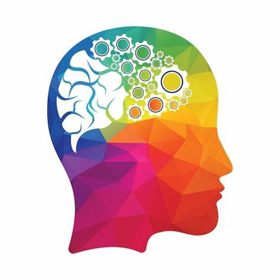

- Helps create problem-solving skills
- Helps in building social skills as you play new people
- Improves thinking skills and speed as you have to formulate new plans to defeat the opponent with a time restraint
- Improves memory since chess is not a game of wits but also memorisation of varios patterns
- Helps create creativity skills by constantly making people form new attacks or defenses in the game

